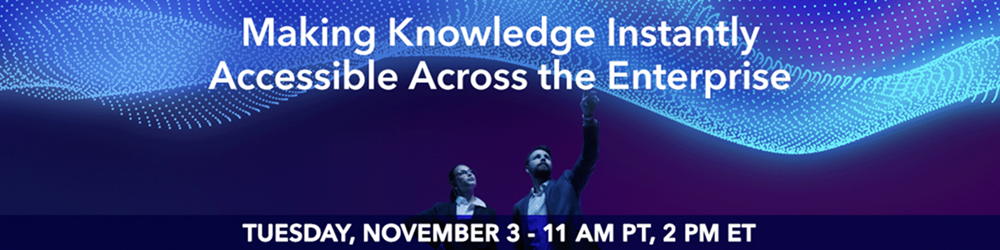

Employees lose valuable time when knowledge is scattered across applications, repositories, and teams. As information volumes grow, organizations need faster ways to connect people with the right knowledge at the moment they need it.
Join us to explore how enterprise search, federated access, intelligent indexing, taxonomies, and AI-powered discovery can break down information silos and streamline knowledge delivery. Learn how to make trusted knowledge easier to find and use across the enterprise.
You'll learn how to:
Register Now to attend the webinar Making Knowledge Instantly Accessible Across the Enterprise.
Don't miss this live event on Tuesday, November 3, 11 am PT / 2 pm ET.